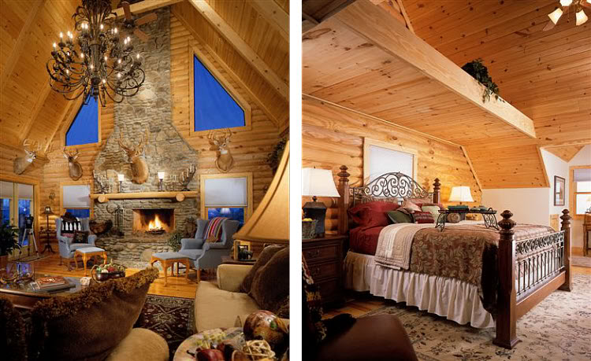
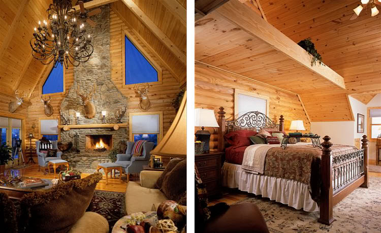

Bed & Breakfast


 

About us
You don’t have to be an aviation enthusiast to fall in love with the unforgettable experience of staying at Bed & Breakfast. It is located in Tralee and is easy drive to. It is unique that it is on a private airport as well as located just of Highway 2 about 20 miles from Kalispell which makes easily accessible by car or aircraft. Pilots can fly their planes directly in front of the property and tie-down. The paved runway is 3,400 feet long at 4,000 feet msl. It offers pilot controlled lighting.
Magnificent mountain peaks border our s pacious six bedroom Bed & Breakfast with breathtaking views from every window. Each room is beautifully situated with private decks that will inspire the nature lover in you. It is the perfect mountain retreat—offering comfort, rustic elegance, delicious food, and lots of pampering.
Bed & Breakfast is ideally located for people to take advantage of a wide variety of activities. For the water enthusiast, we are only minutes away from the stunning crystal clear Bitterroot Lake. Bitterroot Lake is known f or its pure water, fishing, boating, and water sports. If you are the rugged outdoors type, you will be impressed with the entire area for several reasons; it is a hunter’s paradise, and is filled with pristine trails for hiking, biking, horseback riding and walking. For those who want to experience some of what makes Montana one of the most beautiful states in the country, we are within close proximity to Glacier National Park, Flathead Lake, and a handful of national wilderness areas.
The B&B is surrounded by 71/2 acres that are available to our guests for group gatherings, yard games, airplane watching, and more. Just added is a walking/running path around the entire property which has a nice picnic area to stop and have a lunch or simply sitting and relaxing with a great book.